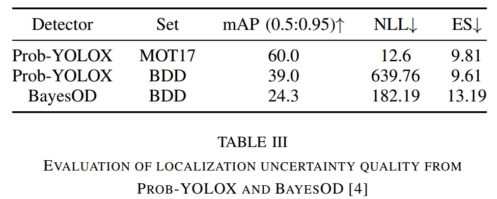

贴一个原文链接
这篇文章的代码依旧没有开源
Abstract
近年来，大多数多目标跟踪都遵循TbD范式，盲目的相信检测器的检测，而没有意识到可能存在的定位不确定性，会给下游的检测任务带来误差。作者引入了Uncertainty Track，以解释来自概率对象检测器的定位不确定性估计。
Introduction
TbD跟踪器的性能受检测器性能的影响很大，尽管在分布内的数据上有较高的准确性，但对于分布外（out-of-distribution）的数据，则会出现很多错误。但是在自动驾驶领域，处理分布外数据十分重要，因此明确的量化预测输出的潜在不确定性，并且根据不确定性信息进行及时的干预，可以提高跟踪器的性能。
作者的贡献：
1）作者提出了检测不确定性的感知卡尔曼滤波、置信度椭圆滤波、边界框扩展以及基于熵的贪婪匹配。
2）研究了由于使用不同的数据集和检测器而导致的不确定性估计的变化如何影响MOT性能。
3）表明定位不确定性分布的显式参数化为MOT中的人类可解释性和错误来源的识别提供了有意义的见解。
Method
Predicting Bounding Box Distributions
Prob-YOLOX Architecture
作者在YOLOX的基础上开发了预测边界框的定位不确定性的Prob-YOLOX。
具体来说，作者在预测均值的边界框回归头旁边添加了一个回归头，用于学习对角协方差的对数尺度。然后，这两个头的输出——均值和协方差，共同参数化了一个代表边界框分布的多元高斯分布。通过计算从该分布中抽取的边界框增量样本的样本统计量，模拟了 MC-Dropout 抽样，如下所示：
其中$x_i$是第$i$个边界盒样本。然后，将边界框聚在一起，执行NMS来确定集群中心。采用改进的快速协方差相交,以融合相关测量。
Losses
在YOLOX中，回归分支使用IoU Loss和L1 Loss进行训练。为了让probi - yolox学习多元高斯分布的参数，我们使用Energy Score loss代替L1 loss：
开发了Sample-IoU Loss来代替IoU Loss:
其中 $z_n$ 是gt的边界框，从 $N(\hat{\mu}(x_n,\omega),\hat{\sum}(x_n,\omega))$ 这一概率分布中独立同分布地抽取了M个样本， $z_{n,j}$ 表示第n个gt边界框对应的第j个抽取样本。
其中 $z_n^{\ast}$ 是解码后的gt的边界框，从 $N(\hat{\mu}(x_n,\omega),\hat{\sum}(x_n,\omega))$ ，这一概率分布中独立同分布地抽取了M个解码样本， $z_{n,j}^{\ast}$ 表示第n个gt边界框对应的第j个解码样本。
Extending Existing Trackers To Leverage Uncertainty
提出四种可能方法来扩展现有的跟踪器。
Detection Uncertainty-Aware Kalman Filter
将物体的状态建模为：
在目前的MOT中，KF测量不确定度是通过缩放宽高比来计算的，这些系数无法适应检测或跟踪的变化。事实上，这种方法对于较宽的物体比较高的物体产生更大的不确定性。因此，作者建议用Prob-YOLOX预测的协方差矩阵代替测量不确定度。
对于单个物体的检测，Prob-YOLOX输出 $\mu_{box} = [x_1,y_1,x_2,y_2]^{\top}$ ， ${\sum}_{box} \in \Bbb{R}^{4\times4}$ ，表示测量协方差，然后将预测噪声转换为 $[c_x,c_y,a,h]$ 格式后，将其送入卡尔曼滤波的更新。
Confidence Ellipse Filtering
（这一部分单看文章不是很懂，还是需要结合代码）
作者建议放弃空间不确定性高于预定阈值的检测。首先，根据95%置信区间为每个边界框的左上角和右下角定义误差椭圆。然后，我们计算它们的轴长和框尺寸之间的比率，并将其与百分比阈值进行比较。数学上，如果箱体宽度为$w_{box}$，高度为 $h_{box}$ ，左上角和右下角误差椭圆的长、短轴长度分别由 $a_{tl}$、$b_{tl}$、$a_{br}$ 和 $b_{br}$ 给出，则只保留满足以下条件的误差椭圆检测：
其中 $\tau_{(i)}$ 是预先定义的百分比阈值。
Bounding Box Relaxation
在与边界框一起绘制误差椭圆后，作者发现许多ID切换是由检测和轨迹之间的交集不足引起的。有趣的是，其中一些案例的误差椭圆与最后观测到的轨迹重叠。因此，作者建议在最后的匹配步骤中加入根据误差椭圆的极值放大的边界框。更具体地说，计算左上角误差椭圆的 $(x_{min}, y_{min})$ 和右下角误差椭圆的 $(x_{max}, y_{max})$ 。然后用 $[x_{min}, y_{min}x_{max}, y_{max}]$ 定义放大后的边界框。
作者将这种基于不确定性的放大应用于前一步的新检测和跟踪检测，并使用GIoU距离度量对它们进行匹配。此外，为了限制放大量，作者在最后的匹配步骤之前第二次应用椭圆滤波器。
整体流程如图：
Entropy-Based Greedy Matching
最后，在与扩展后的检测框的最后匹配步骤中，我们采用基于预测框分布的高斯熵的贪婪匹配来优先考虑不确定性较低(更自信的预测)的检测关联。
Experiment
